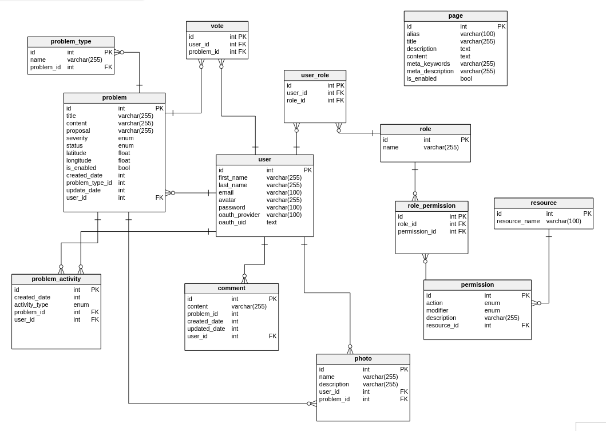

Installation Guide¶
Ecomap project (by LV-164.UI) About this project This repository is source code of the small web project, which is named ‘EcoMap’. This website allows you to publish information about ecological issues around Ukraine to dynamic map. Officials of the Ministry of Environment use this website to collect info about problems and contact with citizens, who publish info to this website. Website’s url www.ecomap.org
Dependencies¶
We’re assumming that you’re using bash & you already have installed such packages:
apt-get
sudo apt-get install mysql-server
Setupping database locally¶
Clone this repository to your local machine
Open file /etc/mysql/my.conf with following command: nano /etc/mysql/my.cnf
Add following options to this file:
[mysqld] default-character-set = utf8 init_connect=‘SET collation_connection = utf8_unicode_ci’ character-set-server = utf8 collation-server = utf8_unicode_ci [client] default-character-set = utf8Go to ‘path/to/repo/ecomap/DB/ecomap/’ directory
Run mysql shell:
mysql -u -pRun following command:
CREATE DATABASE ecomap_db CHARACTER SET utf8 COLLATE utf8_unicode_ci;- this command will create database if it’s not created yet. Put the name you want instead of ‘ecomap_db’Run following command:
USE ecomap_db;- this command will set the database you’ve created earilier as current.Instead of ecomap_db put the name you’ve chosen earlier
Run following command:
SOURCE CREATE_DB.sql;- this command will create all tables for databaseRun following command:
SOURCE INSERT_DATA.sql;- this command will populate all data you need for the beginning of workNow you have working Database!
Database scheme¶
APACHE¶
Ecomap application runs on Apache Web Server v2.4
This is a short manual, which tells how to configure WSGI-Flask application and
Apache server on your server or local machine.
- Install Apache 2 and mod_wsgi lib:
sudo apt-get install -y apache2sudo apt-get install libapache2-mod-wsgisudo apt-get install libapache2-mod-wsgi python-dev
- Enable wsgi mod:
sudo a2enmod wsgi
- Edit your hosts file to create server name alias
sudo gedit /etc/hosts
- Add this line to th your host file:
127.0.1.2 ecomap.new
- Run following command:
sudo gedit /etc/apache2/sites-available/ecomap.confThis command will create file ecomap.conf - this is config file of your site. You can set any name you want!
Add content from apache.conf file, which is situated in -
ecomap/etc/apache.confto/etc/apache2/sites-available/ecomap.confEnable your site:
sudo a2ensite ecomapMake your own copy of ecomap.wsgi (situated in ecomap/www/ecomap.wsgi ). Also read comments in that file, since they are important! This is your main wsgi script which apache will use to run application. It has already configured for our project structure. You can set your own path to templates folder and you’ll see test site.
views.py - this is main flask application file.
All backend code will be written there. You can change everything right now!